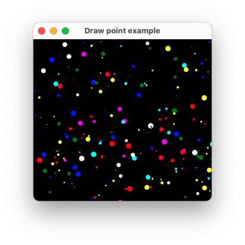

|
xtd
0.2.0
|
Loading...
Searching...
No Matches
draw_point.cpp
shows how to draw point in paint event using xtd::drawing::graphics::draw_point.
- Windows

- macOS
- 

- Gnome

#include <xtd/xtd>
namespace draw_point_example {
class form1 : public form {
struct colored_point {
point location;
xtd::drawing::color color;
int width = 0;
bool operator ==(const colored_point& rhs) const noexcept {return location == rhs.location && color == rhs.color && width == rhs.width;}
};
public:
form1() {
text("Draw point example");
generate_colored_points_timer.interval(200_ms);
generate_colored_points_timer.tick += event_handler {*this, &form1::generate_colored_points};
generate_colored_points_timer.start();
}
protected:
void on_paint(paint_event_args& e) override {
form::on_paint(e);
e.graphics().clear(color::black);
for (auto colored_point : colored_points)
e.graphics().draw_point(pen(colored_point.color, as<float>(colored_point.width)), colored_point.location);
}
private:
void generate_colored_points() {
static auto colors = basic_colors::get_colors();
colored_points.resize(random.next(height() * width() / 800, height() * width() / 400));
for (auto& colored_point : colored_points)
colored_point = {{random.next(client_size().width), random.next(client_size().height)}, colors[random.next(colors.count())], random.next(1, 10)};
invalidate();
}
list<colored_point> colored_points;
forms::timer generate_colored_points_timer;
};
}
auto main() -> int {
application::run(draw_point_example::form1 {});
}
Represents a pseudo-random number generator, a device that produces a sequence of numbers that meet c...
Definition random.hpp:44
Generated on Sat Sep 20 2025 21:13:10 for xtd by Gammasoft. All rights reserved.